栏目一：广绣概览（广绣概述 / 初识广绣）
广绣是以广州为中心、覆盖珠江三角洲的岭南传统刺绣工艺，与苏绣、湘绣、蜀绣并称中国四大名绣。
广绣在色彩运用上浓艳富丽，构图饱满、满地施绣，善用金银线，装饰性强，与苏绣的清雅淡泊形成鲜明对比。
广绣承载着岭南文化的独特身份，是海上丝绸之路上的重要工艺品类。
1. 什么是广绣？
广绣是以广州为中心的珠江三角洲地区刺绣工艺的总称，作为岭南非遗"三雕一彩一绣"中不可或缺的代表，其发展深深扎根于当地独特的自然地理环境，因该地地处北回归线以南、属亚热带海洋性季风气候，温暖湿润的条件极适合种桑养蚕，因而为广绣的兴起提供了丰沛的原材料与物质基础，而广州自古作为海上丝绸之路的重要起点，坐拥河海港口的枢纽优势，使其在漫长历史上成为中外文化交流的前沿，这也促使广绣成为国内最早融入西方绘画写生与光影表现技法的绣种。
广绣历史悠久，唐代已有南海女子卢眉娘于尺绢上绣出七卷微细《法华经》的惊人记载，在传承演进中其工艺日益精湛，技法灵活多变，擅长综合运用丝线、绒线及金线等多种材质，而其上至屏风卷画、下至床罩服饰的广泛品类，亦充分展现了其兼具高雅艺术性与日常实用性的特点。
在色彩美学上，广绣既保留了中国传统刺绣明艳大方、富丽堂皇的审美底蕴，又吸收了西方艺术中的自然写生色彩及明暗光影变化，将两者巧妙融合，形成了形神兼备、独树一帜的视觉风貌，且其色彩运用中蕴含着经世代积淀而成的"集体无意识"与独特的造物规律。凭借丰厚的文化底蕴与绝伦的工艺水平，广绣于2006年被正式列入第一批国家级非物质文化遗产代表性项目名录，成为中华传统工艺宝库中的璀璨明珠。
2. 广绣的地位
在历史的长河中，广绣凭借广州作为海上丝绸之路重要起点的地理优势以及清代"一口通商"的黄金时代，成功将充满岭南风情的刺绣艺术品远销海外，形成了庞大的对外出口贸易，使其不仅深受国内民众喜爱，更在海外产生了广泛的影响力，成为中西文化相互激荡的重要载体。
其文化价值极为深邃，一方面，广绣扎根于岭南本土生活，内涵丰富的吉祥图案、传统伦理教化理念以及浓厚的地方生活气息，展现了"造物美学"与民间智慧；另一方面，在长期的对外贸易中，它不固步自封，大胆吸收了西方美术中的自然写生、光影表现及色彩构成，形成了既有传统底蕴又兼具西方美学情趣的独特风格，甚至对西方的时尚生活产生了影响。广绣不仅是日常生活中不可或缺的实用装饰品，更是东方文化交流的视觉典范，并以此承载着中国文化的深度，传递着美好的"中国梦"。
3. 放1-2张精选作品图
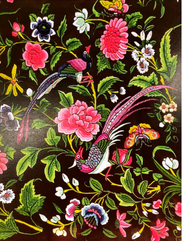
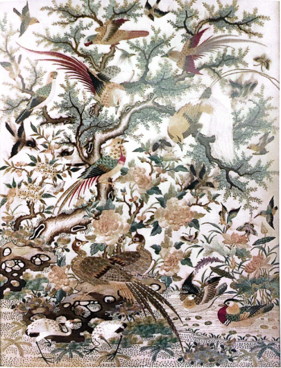
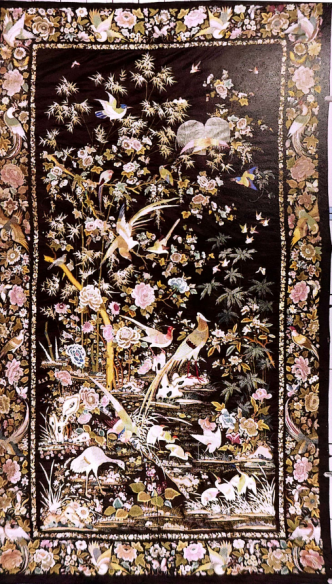
栏目二：历史长廊 / 千年绣脉
广绣历史可追溯至唐代，苏鹗《杜阳杂编》记载卢眉娘在尺绢上绣制《法华经》七卷，同时海上丝绸之路推动其早期传播。
宋元时期技法日趋成熟，承前启后。
明代广绣从民间工艺升级为皇室贡品，并吸收西洋绘画透视与光影手法，风格自成一派。
清代广州一口通商，外销市场爆发，乾隆年间广州锦绣行成立，行业组织化完成，广绣进入宫廷定制与海外贸易双轨并行的黄金时期。
民国时期因战乱和机器冲击而衰落。
2006年粤绣（广绣与潮绣）入选第一批国家级非物质文化遗产，国潮复兴为广绣注入新活力。
1. 广绣的发展
广绣的起源与珠三角地区的丝织业发展息息相关。广州位居北半球，约2/3的地区在北回归线以南，属南亚热带海洋性季风气候，温暖湿润，适宜发展桑蚕业。珠三角地区是中国著名的四大蚕茧产区之一。从广州南越王赵眛（公元前137－前122）陵墓出土的一系列绣纱织物、纺织与染色工具来看，珠三角的蚕桑丝绸业距今已有2000多年历史。早在明朝时期，在南海西樵山地区已形成大规模的循环农业"桑基鱼塘"，直接带动了珠三角地区缫丝、织绸、刺绣等生产技术的发展。
广绣的发展受独特的地缘经济影响颇深。广州在地形上北接岭南山地，南向南海，东江、西江、北江三江最终汇于珠江而入海，具有河港、海港兼备的地理优势。至少自汉代以来，广州即为中国历史上唯一从未关闭的对外贸易之地，它是近2000年来世界上最重要的国际化城市之一。这块山海之间的土地因湿润肥沃而适宜种桑养蚕，农人因耕地珍稀而善于精耕细作，商人因江河通达而精于行商贸易，洋船因港口之便而得以春来秋返，往来不绝。唐代被学界认为是广绣发展的开端，据《杜阳杂编》载："（唐）永贞元年，南海贡奇女卢眉娘，年十四......能于一尺绢上绣《法华经》七卷，字之大小不逾粟粒，而点划分明，细如毛发。其品题章句，无有遗阙。更善作飞仙盖，以丝一缕分为三缕，染成五彩于掌中，结为伞盖......自煎灵香膏傅之，则虬硬不断。"《杜阳杂编》也是国内已知最早记载刺绣与刺绣艺人的古文献。又据《旧唐书》载："宫中供贵妃院织锦刺绣之工，凡七百人......扬、益、岭表刺史，必求良工造作奇器异服，以奉贵妃献贺。"广绣巧匠被选入宫廷专职绣事的不止于唐，清嘉庆《增城县志》记载："司彩陈氏者，字瑞贞，父仲裕......教之读书过目不忘，稍长工刺绣......洪武初，设女官，选民间淑女充其职，陈被选入，见即令兼理六局，宫嫔皆师事焉。二十四年命掌司彩，后赐归省仍给禄养。永乐初，以陈老知宫中故事，诏复原职，以病卒于宫。文皇后为之涕泣，遣中使护丧......"说的是明代增城陈瑞贞，被明太祖任命为司彩，即专职管理皇家刺绣、织锦的女官的事迹。
2. 内销与外销的发展脉络
内销：内销广绣的发展主要涵盖了本地绣品与进贡绣品两大领域。在本地绣品方面，明清时期繁荣的经济与丰富多元的文化，使得广绣被广泛应用于庙堂祭祀、戏服道具及各类日常生活用品之中。在此背景下，以十三行商人和本地文人学者为主的社会精英阶层对文化艺术的积极介入，催生了一批求知欲强的女性"女史"群体，她们依托开明家庭的熏陶与支持从事绣画创作，其作品风格多遵循明清文人书画体系，将诗书画印融为一体，题材多见祥瑞鸟兽及庭院人物，绣工精雅细腻，远超一般的商品广绣。而在进贡绣品方面，广绣更是明清地方官员进献宫廷的重要贡品，尤其在乾隆年间，为迎合新年、万寿等节庆及官场交际，官商们大量订制进贡广绣，使得贡品品类极为繁杂，涵盖文武官服、各类佩饰、乃至各式屏风及挂画等。此类贡品广绣构图饱满周密，针法工整，色彩雅致却又不失鲜丽。尤为值得一提的是，为克服广绣贡品从广州到京城路途遥远的运输不便，当时的大型插屏及挂屏等作品常被制作成可拆装组合的"架片"形式，先运送部件进京，抵京后再另行寻木工装裱成器。
外销：广绣的外销历史根基深厚，自清康熙年间开放海禁起，特别是乾隆二十二年（1757年）广州成为当时唯一的西洋贸易口岸（直至1842年签订《南京条约》），广绣借此凭借"一口通商"的垄断政策迎来全盛，绣品经由澳门、香港及珠三角等地形成的大湾区生产基地，通过"牙行"分发并源源不断销往海外。其出口规模极为可观，根据记载，1900年经粤海关出口的绣品价值就达到了49.67万两白银，而大披肩作为广绣的明星产品在欧洲广受追捧，1772年前后仅在欧洲销量已达8万条，至1776年仅英格兰公司一家便销售了10.4万条，1822至1826年间出口至美国的披肩更是高达88.8万条。庞大的订单有力地推动了本土产业发展，乾隆年间广州已有绣坊、绣庄50余家，从业人员达三千人（当时仅计男工），且历经三个世纪，广绣大披肩至今仍然源源不断地输往欧洲。除了巨大的经济价值，广绣更是广府文化集大成者，它见证了广州人包容开放的特质，在频繁的中西碰撞中诞生了诸如"粤式英语"等融合现象，甚至影响了近代国际语言。凭借极强的实用与创新属性，广绣以民间艺术交流的形式赢得了世界的认同，这股席卷全球的"中国风"，使广绣被国际舆论誉为"中国送给西方的礼物"。
3. 近现代
[AI] 在近现代初期，尤其是20世纪中叶以后，广绣不可避免地遭遇了严峻的发展困境和行业衰落。随着时代变迁、传统生活方式被现代工业化冲击，加之战乱以及计划经济时期对高端手工艺品的需求锐减，广绣的海外订单骤然骤减，广绣厂也面临改制和转型的巨大压力。更致命的是，广绣长期依赖于精雕细琢的师徒传承模式，绣制过程耗时极长、收入回报相对较慢且工作枯燥辛苦，这就导致在追求快节奏和经济效益的现代社会中，愿意沉淀下来学习这门技艺的年轻人大幅萎缩，老一辈年事已高的刺绣大师面临"后继乏人"的窘迫，不少极其珍贵、带有地方特色的传统针法和经典图样甚至面临着失传的危机，广绣行业一度陷入了极度低迷的沉寂期。
正是在这种濒临断代的危急关头，2006年广绣被正式列入第一批国家级非物质文化遗产代表性项目名录，这对广绣的存续具有里程碑式的深远意义。它不仅仅是一项官方荣誉，更是国家层面为这项古老手艺构建起了一道强有力的"保护屏障"。入选非遗后，广绣的地位从单纯的地方民间工艺，跃升为中华优秀传统文化的重要代表，这直接促使各级政府设立专项资金对广绣进行抢救性挖掘、整理和记录，并为那些身怀绝技的传承人评定专门的技术职称和荣誉，切实改善了从业者的生存状况，更重要的是极大提升了社会的文化自信与关注度，让广绣重新走进了公众的视野。
进入当代，广绣的保护与创新发展也呈现出前所未有的蓬勃生机。在坚守传统精湛技法的基础上，广绣的传承人和设计师们开启了大胆的"跨界破圈"之路。一方面，他们将广绣富丽明艳的色彩和丝光绒线的质感，巧妙地融入到现代时装、国潮品牌、高端家居软装，甚至是游戏皮肤和奢侈品牌的联名设计中，让非遗不再是挂在博物馆里的老古董，而是成为日常穿戴和使用的潮流单品。另一方面，数字科技也深度介入保护工作，通过3D扫描、高清数字化建档等方式，将散落民间的古广绣残片和濒危针法永久保存；同时，短视频直播、电商带货等新传播渠道，又为广绣打开了无远弗届的销售和展示平台，吸引了大量年轻受众。虽然今天广绣在全面商业化和保持极致的纯艺术造诣之间仍需不断探索平衡，但它已然成功走出了一条"守正创新"的复苏之路，在新时代展现出强大的生命力。
栏目三：制作体系
介绍广绣制作工艺相关，适当配图，具体可细分为：
- 制作工具（丁书P10-13）
- 制作材料（丁书P14、P61）
- 工艺流程（丁书P15-16、论文）
1. 制作工具（丁书P10-13）
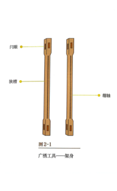
架身（木方） 由两根长约120厘米、宽5厘米的木方组成。木方整体呈中间圆滑、两头方的圆柱形。木方上、下面的中间各有一条夹槽（长100厘米，宽0.5厘米、深0.8厘米），用于嵌入绣地。木方两端的凸眼（长4.5厘米、宽0.8厘米、深5厘米）形成两道十字通道，用于插入"横担"。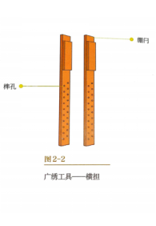
横担（横头） 是两根长约80厘米、宽4厘米、厚0.6厘米的扁木条。横担上面有两行榫孔，榫孔的间隔为1厘米，两行榫孔相错，用于插入螺钉。将两根横担穿入架身两端的凸眼，移动螺钉插入的榫孔，即可调节绣架的长短。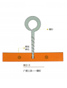
螺钉 钉头呈圆锥形，共4枚，用于插入横担的榫孔。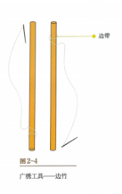
边竹 是两根圆柱（圆直径约0.8厘米、长约40厘米）。边竹的一端系着棉线，棉线用于穿针；将两根边竹紧系于绣地两边，起到绷紧绣地的作用。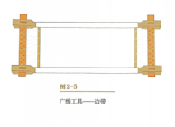
边带 宽约1厘米，一端系紧横担，另一端穿过边竹和绣地，来回往返于横担和边竹之间，起到将绣地在左右两个方向绷开绷紧的作用。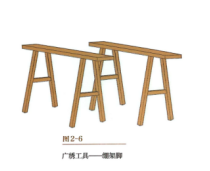
绷架脚 是一对椅凳（长75厘米、宽15厘米、高约80厘米），起到支撑绷架的作用。花凳 款式、尺寸规格不定，以刺绣者坐得舒适为宜。
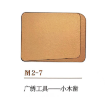
小木凿 由坚实的木头制成，呈斧头形、四角呈圆形，用于将绣地和纱纸嵌于架身的夹槽里。纱纸 具有韧性。将纱纸撕开成条状后，用小木凿将其嵌入架身的夹槽里，起到压紧绣地的作用。
毛边纸 表面平滑，用于隔离绣地与架身，避免架身磨损绣地。
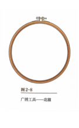
花箍 用于绣制大幅作品中的局部小图。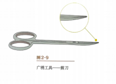
剪刀 刀刃长约5厘米。小剪刀的嘴尖向上弯，使用时贴近绣面但不易伤害绣画。大针（长针） 长约8厘米。将大针穿入边竹一端的粗棉线固定边竹，起到将绣品与绷架贴紧的作用。
小针（细针） 长约2厘米，将其穿入丝绒线，用于刺绣。规格有10、11、12号等。11号常用于铺底、粗绣；12号常用于施绣精细的部分。
搁手扁竹（枕手竹） 材质为扁竹或扁木，大小与横担相近。置于绣架上，承托进行刺绣的手，有助于缓解刺绣时手部疲劳，防止手接触到绣地以免弄脏绣地。
毛巾 挂在花架附近的小毛巾可用于擦手汗。
盖架布 当刺绣者暂时离开绣架时，需要用盖架布遮盖绣品。
布袋 当刺绣结束，绣者离开时，需要将整个花架装进布袋，进行密封保护，还需要盖上塑料布，防止被水玷污和被虫蚁叮咬。
透光台 台面表层为透光玻璃，玻璃下方安装灯管，起到过稿（画稿）的作用。
过稿笔 包括毛笔、勾线铅笔，以不易化水为宜，用于过稿定纹。
洗渍用具 主要有毛巾、清水、草酸、刷子等。
2. 制作材料（丁书P14、P61）
绣线 以蚕丝为主，分为绒线（广绒）和丝线两大类。广绒由八条蚕丝打成一缕，两缕合为一股线，线体较粗，常用于粗工部位；若将线松解、擘分成单丝或若干分之一股，则称为"擘丝"或"开绒"，此时用丝极细，专用于精工细部。除普通绒线外，还有丝光实用线、九彩线、金银线以及金绒混合、绒线混合等品种，以满足不同色彩与光泽需求。
绣料 多为绸、缎、绢、纺、纱等真丝面料，如真丝缎、双丝、双宫缎等；少数为棉布、麻布、毛毡等纺织品。
其他刺绣材料 包括垫料（用于制造凸起浮雕效果）、亮片、绫片、彩珠等，常与绣线结合使用，增强立体感和华丽感。
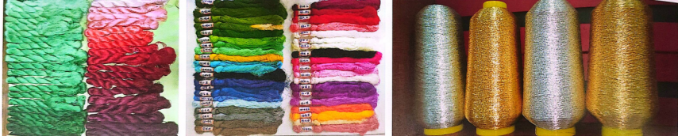
3. 工艺流程（丁书P15-16、论文）
- 图稿设计：用绘画的形式设计出各类绣品的画稿，即刺绣的图稿。
- 过稿（勾稿）：将设计好的刺绣图稿，在绣地上复制黑白单线的轮廓线稿。也可以借助数码打印技术，将原画彩色喷印于绣料之上，但打印机对绣料材质有要求。
- 上绷架：将绣地平整地绷紧在架身，安放到绷架上的过程。
- 选色线（配色）：根据刺绣图稿，挑选刺绣所需的色相、色阶、粗细不同的绣线。并分组扎好，整齐摆放在花架旁。
- 定绣纹：根据刺绣图稿，按照图案绣制的针法运用规律，设计各个物象的绣纹，用铅笔在绣地刺绣处绘制绣纹。
- 选针法：根据刺绣图稿，按照图案的表达效果，以及图案的针法工艺，选择施绣的针法。
- 施绣：根据刺绣图稿，耐心地按照选用的针法和技艺进行刺绣。
- 检查：在刺绣过程中，需要竖起绣架，在远处查看刺绣的效果。在刺绣结束时，检查各处刺绣效果。最后卸绷前，如有错漏之处，需做好刺绣改正，如有污渍应及时清洁。
- 卸绷（落绷）：当刺绣完成并到预期效果后，将绣地从绷架上取下。
- 整烫：在桌面铺上羊毛毡，再盖一层毛边纸。将绣品放在毛边纸上。先烫平绣品的正面，顺着绣品的刺绣方向轻轻烫平。
- 装玻璃框及包装：将绣品绷紧，平整服帖于框内，装裱后的绣品有利于欣赏和保存。
栏目四：针法详解 / 千针百态 / 针尖乾坤
1. 针法总结/概述
广绣常用针法（共15大类，约58种）
- 起针（3种）：底面打结式起针、连续钉密针起针、回针劈线固定起针。
- 收针（2种）：原地钉密两针收针、借地钉密两针收针。
- 平针类（8种）：直针、斜针、满针（铺针）、弧针（宴针、风车针）、松叶针、旋针、顺直针（前进平针）、倒扣针。
- 续针类（6种）：顺续针、倒扣续针（反向续）、转纹续针、舒针（撕针、舒情针）。
- 咬针类（4种）：顺咬针（拥咬针）、反咬针、渗针、丝口针。
- 插针类（3种）：捆插针、洒插针、续插针。
- 扭针类（2种）：前扭针、后扭针。
- 针钉类（4种）：珠针（顺珠针、正向珠针、乱珠针、钉针）、对珠针（倒扣珠针）、码针、勒针。
- 结绣（4种）：打籽针（圆籽针）、松子针、长尾子针、绕绣。
- 编织类（7种）：钩针、编织针、竹织针、横竖织纹针、人字织纹针、编钩针、选格针（压象眼）。
- 立体绣（2种）：叠堆绣、凸高绣。
- 贴绣（2种）：补贴绣、贴花绣。
- 金银线绣（6种）：直平绣、玲珑绣、圆平绣、扣圈绣、达鳞绣、翎毛夹金绣。
- 织补绣（4种）：织锦绣、锦上织花绣、锦上添花绣、补画绣。
- 双面绣（3种）：同样同色双面绣、同样异色双面绣、异样异色双面绣。
2. 常用针法详解/教学（胡书）
起针
广绣起针方法归纳为三种，一是最传统的底面打结形式起针；二是连续钉密针起针；三是回针劈线固定形式起针，根据绣面的要求选择适当的起针方法。
一、底面打结形式起针
该起针方法与平常缝补衣服的方法一样，先在线的一端打个结，从绣面的底起针，这是起针的最简单形式。
穿线后把针放在手指上，在针上缠绕几个圈，拉出针，按住手上的线圈，拉紧后结便打好。

二、连续钉密针起针
在绣面上连续钉二至三针密针，这种起针方法的特点比较隐藏，一般把钉针隐藏在绣面，不能出现有结，在实际应用中，这种起针方法较为常见。
（1）在绣面上连续钉二至三针，在接着的刺绣操作中把这几点钉针遮盖，见图。
（2）连续钉密针起针可以起到藏针作用，假如在要操作绣面上施行的针法不易遮盖针眼，可以在另一个绣面上起针，通过钉针把线引到将要绣的面上。先在一个绣面下钉两针密针起针，再通过这个绣面的底层把起针引到要绣的面下。


收针
收针常用两种方法，一种是原地钉密两针收，另一种是借地钉密两针收，两种方法都较为常用。特别需要提醒的是广绣的收针不能用缝补衣服的那种方式在底绕结收，就算是广绣的绕结收针也应该是在面绕结再在原地落针，把结头往底拉，绕结收针在广绣工艺中很少采用。

一、原地钉密两针
（1）收针操作在原地进行，方法与起针的钉针法相同，尽量把钉针隐藏在绣面的下面，操作前用针略拨开绣面，在绣面下连续钉两针密针。
（2）贴绣面剪去多余绒，再用手或针理顺绣面。
直针
直针，走线迹垂直，起落针整齐，线步较短，针距平密，直针是刺绣的最基础针法，在对各个时期广绣品的考察中都有这种针法。
操作步骤
（1）钉两点起针后，底出针、垂直插针。
（2）针距间靠密，垂直排列绣满。

绣针（斜针）
绣针也称斜针，走线迹斜向，约呈45°，离边起落针整齐，线步较短，绣针通常作捆边、绣字体等。

操作步骤
（1）钉两点起针后，底出针、斜向约45°角插针。
（2）针距间靠密，斜向排列绣满。
满针（铺针）
满针也叫铺针，指面积较大的直针或绣针，起落针按绣面的形状，针脚齐整，是早期广绣品常见的针法。

操作步骤
（1）起针后，根据物象的纹理策划线的走向，或垂直、或横纹、或斜向，针眼齐而密，一般选择从中间开始绣起。
（2）完成一边后，从中间继续开始排列绣满另一边，针距间靠密。
助理工艺美术师 蔡玉真 操作示范
飒针
飒针（菱针），一针式，长直针的工艺，因为其起落针线迹形状像风车，也叫风车针。

操作步骤
底打结起针，两端都可以出针，圆心呈点状，也可以呈圆状。
助理工艺美术师 蔡玉真 操作示范
旋针
旋针与绣针操作方法相同，但旋针走线迹是圆弧状，围绕着圆弧不断靠近圆弧边线落针，针脚密，呈放射圆弧状，外弧线针脚拉疏，近似旋转状针迹。

操作步骤
（1）在圆弧的外围出针，对准圆弧线迹倾斜落针，角度根据圆弧的大小而定。
（2）圆弧的针脚要密，圆弧外围落针脚要疏，使得针迹呈旋转的状态。
（3）旋针多表现动物的眼眶，作旋针时常常有意识地留空少许，摄入其他颜色的绒毛。
顺续针
顺续针：正向续针，是直针的延续针法，直针绣的距离较短，当线条加长时，不可能是一线到底，中间会起泡量，因此，需要在直针基础上作延续，称续针。
操作步骤 （1）直走第一针，第二针在第一针尾约1/3的位置底破绒出针。线路走势比较直，针程视物象的大小而定，一般最长不超过0.8cm，虽然没有绝对的数据，但针步越长越容易起泡量，假设是树枝或树身，需要多次顺续针才可以把树身填满，一般从右下向上走针，第二行再由上至下行针，行与行间的针路非常讲究，需要错开操作，顺续针操作上有一定的难度，在底向上走针时，针刚好破在正面绒的中间，不是一般人能做到的。
（2）续针操作分解为续针侧面及正面针眼间隔的效果，续针效果为最终成型线条。
顺续针在单绒形态时与倒扣续针可分别运用，但在铺面块时，也可以是顺续针与倒扣续针来回运用，正向运用顺续针法，反向运用倒扣续针法，随刺绣师自如运用，一般没有固定的程式。

倒扣续针（反向续）
倒扣续针和顺续针作用是相同的，画面效果也基本相同，表面上很难分辨，但底面效果相差较大，就倒扣续针本身底面与正面效果基本是相同的，倒扣续针的运用多见于双面绣，操作技术比顺续针要简单一些，但倒扣续针对绒的松紧度把握有一定难度，顺续针与倒扣续针的选用视个人习惯。
操作步骤 （1）顺直针后，针在底往前走0.5cm~0.8cm出针，向后对准第一针尾约1/3正面破绒下针，再继续重复在底向前两个针距出针，再向后破绒下针。
（2）倒扣续针操作分解为倒扣续针侧面及正面针眼间隔的效果。
（3）分别展示倒扣续针正面、底面的成型效果。

转纹续针
转纹续针，可以理解为弯线或圆弧线的连续针，要绣一条弯线不可能一线绣成，必须要以一步一步短直针程连接实现，因此，转纹续针是弯线的连续针。转纹续针的操作方法与直线顺续针和倒扣续针相同，可以正向续、也可以反向倒扣续。
操作步骤 （1）由于针路变为弧线，针程不能过长，最长一般不超过0.4cm，破绒相叠的一针也不能太长，一般在0.2cm，过长绣出的弧线不顺畅。
（2）转纹续针最终呈现顺滑圆弧线条效果。

顺咬针
顺咬针：要表达一个立体面，先从这个立体面的外围绣起，用短直针或绣针一行又一行地由外至内地排列绣，最高面及后绣面是内行，行与行间的交接相咬合，这种针法称顺咬针。
顺咬针一般表达色彩渐变及行与行间的区分，在早期的广绣品中也常用水路作间隔，民国以前的广绣日用品在外围先勾边线再向内做顺咬针，层次分明、立体感强。顺咬针在外围的针脚一般都很齐，这个齐口在针法上叫捆，因此，顺咬针也叫捆咬针，在相咬的一面，假如不留水路，其衔接方法是第二行相咬着第一行的针脚。
操作步骤 （1）用直针方法先把外围绣满，注意外围针脚要齐，第二行起针在相叠第一行开始，根据要表达绣面的立体程度确定相叠量。
（2）第三行起针也在相叠第二行开始。
（3）展示顺咬针完整渐变立体效果。

反咬针
反咬针：要表达一个立体面，先在这个立体面的内面绣起，用短直针一行又一行由内至外地排列绣，最高面是外行，给人的感觉是由外至内一行一行在相接处微向内渐变往里收。
操作步骤 （1）从内面起满绣，第二行相叠第一个绣面，操作方法与顺咬针是相同的，只是相叠咬相反了。
（2）最外的一行再从第二行相叠开始。
（3）展示反咬针最终成型效果。

渗针
渗针，广州话读沈（同音字，有撒的意思）针，在已经绣好的绣面上运用渗针塑造微小的色彩变化、转接面、花纹图案、质感及明暗面的表达，或者是在铺针的基础上，不断增加色面的层次，塑造立体感效果。渗针虽然在较早期的广绣品中已经出现，可能是由于绒线的材质问题及技术原因，早期广绣品渗的运用极为生硬，而现代广绣运用的渗针技术比较精致和圆润。
现代广绣较多以绣画为主，渗针的运用非常普遍，比如铺色块、塑造色彩变化等，渗针在绣面表面的针眼相互叠遮，较少露出针眼，因此在铺色块工艺上，随着年代的发展，渗针工艺的运用逐渐多于续针，而民国前绣品铺色块多运用续针绣法，针眼略为明显。
操作步骤 在绣好的色面中，加渗入变化的颜色，颜色的加插可根据画面效果分粗细、色阶自由加插，示例为单种颜色的渗入示范。

丝腰针
丝腰针，广州话读摄（同音字，有塞在缝间的意思）针，是20世纪六、七十年代开始出现的广绣针法，在广绣挂画图稿设计中，20世纪五十至七十年代的挂画人物形象较为多，用顺续针或转纹续针的方法表达人脸，针脚比较明显，丝腰针正是为了解决这个难题而开发的一种新针法。
丝腰针的绣法是，用较幼细的绒腰在绣好的渗针或续针中再增加针步，专门遮挡针眼，大多数运用在人脸、手及幼滑面块的表现上，除了遮挡这些绣面的针眼外，还可以更加细腻地表达色彩效果，这种针法叫丝腰针。
民国时期广绣挂画《福禄寿》局部，人脸的表达运用了续针，针眼比较明显，该绣品由广东民间工艺博物馆收藏。

捆插针
捆插针中"捆"为广绣针法里捆边、齐边捆的含义，针法落针方式为一侧捆边齐口、可见针脚，另一侧长短线路穿插、不齐口，后续持续一长一短穿插直至绣满区块；清末之前的捆插针首行两面针脚均为齐口，自第二行开始穿插。该针法应用广泛，可塑造立体面、明暗与渐变效果，核心特点是后行线迹遮挡前行针脚，层层叠加覆盖，实现色彩渐变。

洒插针
洒插针的"洒"代表不齐口，技术难度较高，针与针之间以色线相互穿插，预先预留其他色线的穿插空位，后续插入对应色线时将空位填平；针法成品绒面色彩穿插交融、画面平整，针迹两端都露出针眼，区别于捆插针一端针眼隐藏相叠，因工艺复杂，实际使用频次相对偏低。
操作要点：1. 针法呈现绒色穿插的平整画面，两端可见针眼；2. 完成满绣后的成品样式；3. 可按照分解步骤完成实操缝制。

续插针
续插针属于捆插针的延长针法，分为直续插针、转纹续插针两类，针法技术规则同时兼容捆插针与续针的要求。
操作方式：在捆插针的基础上延伸针脚，跟随画面色彩变化持续插针、续线，完成渐变过渡。

前扭针
前扭针针路向前扭进，针程短于续针，仅一端针眼外露；右手操针从左插针时针迹略向内挤，缝制同个眼圈的效果会比后扭针更小，适合根据物象神韵调整眼眶大小。
操作步骤：1. 钉两针起针固定在扭针线迹上，按圆弧设置约0.5cm针步，首针线下约1/2处侧上针，将针脚藏于绒线下方；2. 向前插针时稍加扭转，用新线迹遮盖上一针针脚；3. 重复向前扭进的出针操作；4. 最终成品每个针步仅外露一个针眼，另一个隐藏在扭绒之下。

后扭针
后扭针针路向后扭进，针程同样短于续针、隐藏一端针眼；右手从右插针时针迹略向外扩，现代广绣挂画的动物眼眶多使用该针法，通过绒线顺逆纹向的差异，表现色彩细微变化、画面对比、深度与空间感，缝制同眼圈的视觉尺寸略大于前扭针。
操作步骤：1. 首针遮盖起针点向后走针，落针后回到前一针线下出针；2. 向后插针时扭转线迹，遮盖前一针针脚；3. 在前一针针底1/2处出针，持续向后扭进；4. 完成落针缝制，成品单个针步仅可见外侧针眼。

珠针（顺珠）
顺珠针也叫正向珠针、乱珠针、钉针，依靠小针脚起珠状造型，可衍生梅花状、米字珠针等样式；操作方式近似平针，针步短、绒线粗，针步约0.2cm~0.3cm，表面呈现独立珠状，走线方向可随意更改，成品表面顺滑。

对珠针
对珠针又称倒扣珠针，缝制规则为针程每前进一步便后退一步，表面针步珠状长度约0.2cm，底面连接线针步约0.4cm；珠粒连续且具备固定方向性，走线不可随意更改，属于连续珠针，和顺珠针的随意珠绣形成区别。
操作分为两种形式：
1. 连续对珠针：平针后底起针，以0.2cm为固定针距，先后向入针、底部出针循环缝制，形成连贯珠粒；

2. 断续对珠针：起针后预留两个及以上针距的间隔，按预设间距向后入针、底布出针，制作分散独立的珠粒效果。

3. 广绣程式化针法设计
1. 流星赶月绣法 针法步骤：①鲜亮颜色铺针铺底；②套针插入浅色；③续针绣尾毛毛骨；④沿毛边绣珠针；⑤铺针与勾针在翎片绣成"Y"形；⑥铺针绣羽毛斑点。常用位置：凤凰尾翎。
2. 起鳞雾彩绣法 针法步骤：①铺针铺底；②勾针勾勒鳞片轮廓，为"起鳞"；③鲜色套针添加毛骨造型，为"雾彩"。常用位置：动物背部鳞片。
3. 起鳞伴骨绣法 针法步骤：①铺针铺底；②勾针起鳞；③直针绣中间毛骨；④直针绣旁边件骨。常用位置：禽鸟的毛骨。
4. 龟坼纹绣法 针法步骤：①斜纹续针铺底；②勾针起龟坼纹；③龟坼纹中间用铺针起斑点纹。常用位置：大鸟的胫部、鱼鳞、鸟的羽毛纹饰。
5. 禽鸟脚部绣法 针法步骤：①铺针铺底；②勾针绣胫部纹路；③勒针添加横纹造型，勒针中间用钉针固稳；④扣针绣脚趾部分。常用位置：禽鸟脚部。
6. 雏菊绣法 针法步骤：①铺针刺绣花心；②套针绣第一层花瓣呈放射状；③套针与第一层错落重叠；④打籽针。常用位置：雏菊。
7. 人物面部绣法 针法步骤：①平针根据鼻形铺垫；②正针铺面；③扭针勾勒鼻形；④斜纹绣针绣眉毛；⑤辅针铺眼型；⑥上唇勾针，下唇扭针；⑦扭针绣头发。常用位置：人物面部。
8. 打枣针绣法 针法步骤：①由底起针，隔一定距离落针；②手勾绣线，起针后围绕绣花针绕针；③起针带线，落针位附近落针。常用位置：花圈。
9. 金鱼尾鳞片绣法 针法步骤：①铺针铺底；②勾针勾勒每片鳞片轮廓；③在鳞片中倒绣两针勾针造型。常用位置：金鱼鳞片。
10. 三字班绣法 针法步骤：①洒插针铺底；②滚针以短距针入；③扭针在领毛上绣"三字"班纹；④绕针绣银毛、深色作边；⑤铺针绣斑点；⑥为领毛穿毛。常用位置：领毛装饰。
11. 禽鸟眼部绣法 针法步骤：①铺针绣眼睛；②扭针绣眼珠眉绣三圈浅色；③扭针绣浅色纽扣绣两圈深色；④珠针绣斑纹；⑤浅色绣深色纽扣绣若干圈。常用位置：禽鸟眼部。
12. 锦鸡尾翎绣法 针法步骤：①洒插针绣尾翎；②铺针绣半圆形斑纹；③扭针绣三条线条；④洒插针绣羽毛毛边；⑤绕针绣羽毛毛骨；⑥翻针在毛骨上绣竹节斑纹。常用位置：锦鸡尾翎。
13. 寿带鸟尾翎绣法 针法步骤：①洒插针、绕针绣羽毛；②洒插针铺底翎毛；③滚针绣色；④扭针绣两边线条；⑤洒插针绣羽毛毛边；⑥绕针绣羽毛毛骨；⑦翻针绣羽毛斑纹；⑧洒插针绣尾翎。常用位置：寿带鸟尾翎。
14. 珠针绣法 针法步骤：①铺针铺底；②珠针第一排与外轮廓平齐。常用位置：禽鸟头部点缀。
15. 扭云纹绣法 针法步骤：①洒插针绣线；②套针毛边要毛；③铺针绣斑点纹；④扭针扭纹点缀；⑤绕针绣羽毛毛骨；⑥珠针在羽毛毛骨上绣竹节斑纹。常用位置：孔雀尾翎。
16. 叶子线绣绣法 针法步骤：①绣针；②铺针绣树叶内圆点；③打籽针在空眼点缀。常用位置：叶子。
以上共16种传统广绣特色技法。如有需要，可继续整理成连贯段落或进一步精简。😊
栏目四：文化印记（放入栏目一）
广绣常见题材包括荔枝（利市大吉）、孔雀（富贵吉祥）、龙凤（皇家威仪）、牡丹（繁荣昌盛）以及岭南热带花果和百鸟主题，承载了岭南地区的民俗心理和审美偏好。
广绣应用领域涵盖观赏类（挂屏、屏风、册页）、实用类（粤剧戏服、披肩、桌布、扇套、婚庆用品）和宗教民俗类（庙宇装饰、神袍）。
清代广州一口通商期间，广绣大量出口欧洲，按西洋画稿制作，融入西方建筑和圣像等元素，形成"洋庄货"风格。
行业传统中，清代至民国时期高级绣工多为男性，称为"花佬"，专攻人物、龙凤等高难度题材，这一性别分工在中国刺绣史中极为特殊。代表作品包括百鸟朝凤图、荔枝孔雀图、龙凤呈祥挂屏、清代宫廷龙袍与官员补服，以及当代传承人的新作。
栏目五：传承与鉴赏（放入栏目六）
广绣目前有国家级和省级非物质文化遗产代表性传承人，他们通过授徒传艺延续技艺。但广绣面临学习周期长（三年以上）、经济回报偏低、年轻从业者稀缺等现实困境，各方正在探索破解之道。
鉴赏广绣可从绣面平整度、针法均匀度、色彩搭配和谐度、金银线光泽保持等角度入手。古董广绣的保存建议包括避光防紫外线、保持通风防潮、放置防虫剂等措施。
同时设置二十道选择题形式的广绣知识问答，题目覆盖历史、针法、风格、非遗地位、行业传统等各个方面，增强互动性。
栏目五：图案解析 / 绣品万象
1. 经典题材分类
传统广绣题材极为广泛多元，在全国四大名绣中独树一帜——苏绣以小猫、金鱼、名人画稿见长，湘绣以狮虎为典型，蜀绣以芙蓉、鲤鱼、公鸡为代表，而广绣则常见荔枝、红棉等岭南花果。由于既供宫廷贡品又面向欧美外销市场，广绣题材在受众面上最为丰富，从本次采样实物与图像来看，出现频率由高至低依次为花鸟、城市风景、园林、人物、民俗生活、民间故事、西方风格纹样等。
受远离政权中心和长期对外贸易的影响，广绣较少受宫廷文化与士大夫审美束缚，更多取材于自然风物与民间生活，形成了中西杂糅的独特风格。
其中花鸟是外销广绣最常见题材，既受清代《五伦图》暗喻伦理关系的影响，也广泛运用"锦上添花""官上加官"等吉祥谐音手法，19世纪中期以后更受欧洲审美变迁影响，由繁密转向简洁素雅，留白增多、配色转为邻近色，风格清丽柔美而技术更为精熟；城市风景题材则以广府名胜为常见，多根据实地风貌进行艺术提炼，在摄影术普及之前为西方人提供了关于中国的异国情调想象；园林题材在外销广绣中并不像外销画那般写实，而是将园林与人物、花鸟紧密交错、密不容针，呈现繁花锦簇的广府生活图景，尤其在大披肩等服饰产品中更注重叙事性与装饰性；民生百态的生活题材灵感来源包括官宦日常、古典文学民间故事和市井生活，绣品摆脱文人气质而刻画鲜活的地方民俗，充满浓浓的"人间烟火味"，同样多应用于大披肩。
兽类动物题材则相对少见，龙凤多见于宫廷御用及婚嫁服饰，而"虎"因与"苦"同音且历史上广东虎患不断而民间不喜，"狮""貔貅"等猛兽题材亦属少见，这反映了广府人"以和为贵"、讲求达观包容的文化心理；西方装饰风格纹样常见于披肩、床罩、桌布等实用饰品，一部分为外商来样定制，更多是广州匠人根据西方流行样式结合本地装饰文化而设计，如黄绸人物花鸟纹床罩中心为四只模仿"鹰"造型的孔雀，四角穿插欧洲人物，另有中英文字共存的挂帐，成为中西文化强烈碰撞与交融的佐证；传统吉祥纹饰与中原形制相似，多作辅助点缀，如博古纹、花篮、盆景、"琴棋书画"等，但"功名利禄""加官晋爵"及"五路财神""摇钱树"等题材在采样中极为罕见，恰恰印证了广州远离政权中心、重商务实的社会心态。
总体而言，传统广绣题材的核心特征可概括为"广、活、融"三个字——来源广泛，从皇家贡品到外销商品无所不包；取材鲜活，扎根岭南风物与市井生活；风格交融，中西文化碰撞之下形成独特的杂糅之美，同时也深刻折射了广府人达观包容、重商务实、不慕权贵的文化性格，正如广府匠人所践行的——只需做好手上的活计，多了几个新颖的花样，自能迎来不远千里而来的西方朋友们，日复一日，年复一年，其时已立于潮头而不自知。
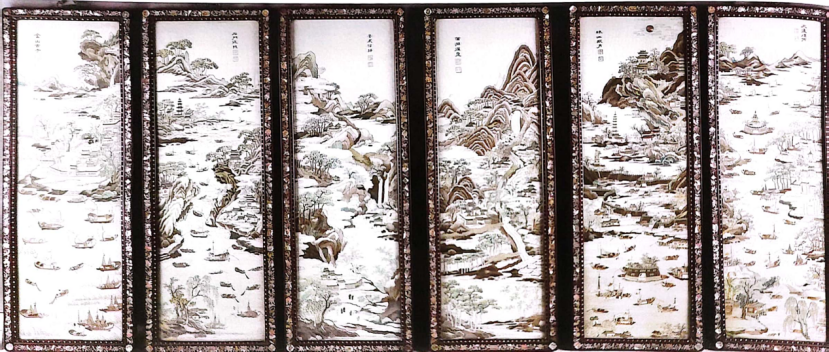
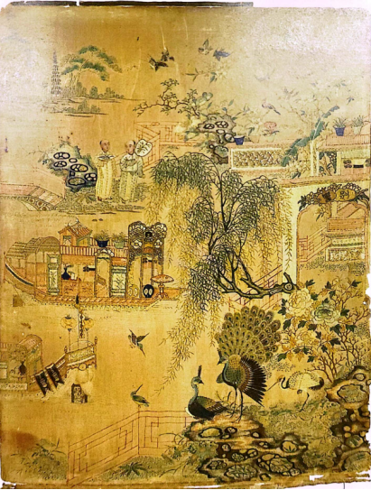
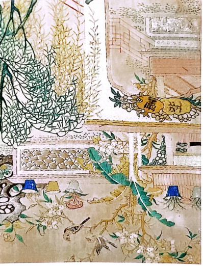
2. 题材谱系
广绣题材谱系呈现出"以鸟禽花卉为核心、以吉祥寓意为主线、以岭南风物为特色、以外来元素为补充"的格局，各类题材在不同历史时期各有兴衰。早期以传统吉祥纹样和宫廷趣味为主导，19世纪外销兴盛后花鸟题材由繁密转向简洁素雅，城市风景与民俗生活题材大量涌现，西方纹样与中式图案相互交融，至清末民初则形成了传统与时尚并存的多元面貌，题材的演变既是市场导向的结果，也是时代变迁的忠实记录。
3. 构图形式
传统广绣构图形式多样，大致可分为"自由构图"与"适形构图"两大系统，前者多用于挂画、屏风等纯观赏性绣品，后者多见于床罩、披肩、台布等实用产品。
自由构图方面，主要呈现两种取向。一是繁满构图，画面元素繁多、布局饱满丰富，几乎不留空隙，但细密有序、繁而不乱，鸟禽与植物间分层穿插，层次分明，在视觉上塑造琳琅满目的装饰效果。二是疏朗构图，自宋代文人花鸟画以来深入人心，广绣亦有所效法，画面适度留白、疏朗匀停，鸟禽姿态悠闲、植物呈现自然生长状态，如同一幅没有落款的工笔花鸟小品；这种风格也与18世纪后期欧洲新古典主义的兴起相关，放弃了洛可可过分矫饰的曲线，追求简洁、典雅与节制，画面留白增多、刺绣面积变小、鸟禽数量减至一两只，呈现一派野趣盎然。此外，自由构图还衍生出整体分割式和局部连缀式两种屏风类构图：前者系列屏风画面大小相同、内容共同表现一个主题但每幅又各具独立性；后者采用多幅画面连续表现一个故事完整发展过程的创作形式，类似连环画，有较强逻辑性，适宜表现故事性强的母题。
适形构图方面，主要适用于床罩、台布、披肩等实用产品，根据产品结构在有限的空间或轮廓内进行纹样变形处理，以强调产品的装饰效果。典型如外销广绣披肩，设计重心在其四个角落，尤其重点考虑对角折叠后"大三角形"的装饰效果，正中区域相对弱化，由披肩使用方式决定；床罩类产品则常将大幅床面划分为一个中心及四个角落的设计区域，即"四菜一汤"式纹样设计，规整而庄重，强调产品功能属性。
栏目六：当代创新
广绣在当代与时尚服饰、家居软装、数码产品配件等现代设计相结合，并开发出文具、礼品、IP联名等文创产品，实现传统技艺在当代消费语境下的多种转化与应用，展现出广绣在国潮复兴背景下的新生命力。
栏目六：传承鉴赏 / 绣传薪火
[AI] 广绣作为粤绣的重要组成部分，于2006年被列入第一批国家级非物质文化遗产代表性项目名录。广州作为"三雕一彩一绣"的发源地，广绣是最具代表性的广州传统工艺之一。
广绣拥有多位国家级、省级和市级非遗代表性传承人，形成了一支老中青结合的传承梯队：
- 陈少芳（第一批国家级非遗代表性传承人，1937年生）。1962年毕业于广州美术学院国画系，以"以画入绣"著称，创新了绒毛针、竹叶针、短发针等多种针法。其代表作《岭南锦绣》长13.8米、宽1.2米，集纳了广绣传统与创新的全部针法和技艺，被关山月感叹为"划时代之作"。她还编写《广绣》一书作为培训教材，培训技术人员不下500人次。
- 许炽光（第五批国家级非遗代表性传承人，1932年生）。出身广绣世家，7岁随父学艺，从艺80余年。发明了"施盖针""鸡仔针"等新针法，代表作品有《红荔白鹅》《红棉八哥》《紫荆孔雀》《竹报平安》等。
- 王新元（国家级非遗广绣市级代表性传承人，1979年生）。退役军人出身，2001年退役后拜师学艺，2025年被评为全国"最美退役军人"。他积极推动广绣走进校园、社区、企业，与院校合作探索"中专---大专---本科"培养路径。培养3万余名学员、40余名职业徒弟，三幅作品被中国工艺美术馆·中国非物质文化遗产馆收藏。
- 梁秀玲（广绣市级代表性传承人、广东省工艺美术大师）。广绣家族第五代传承人，6岁随母学艺。融合苏绣、湘绣等技法，开创"层层叠绣"立体绣法。
- 梁桂开（广绣省级非遗代表性传承人，1945年生）。6岁随母学艺，后拜师黎煊，用广绣复刻了关山月《丹荔图》等名家名作。
- 伍洁仪于2025年入选第六批国家级非遗代表性传承人名单。此外，还有梁桂开、陆柳卿等为广绣传承作出重要贡献的大师。
三、传承模式
传统广绣以"家族式""师带徒式"口口相传、手把手教为主。随着时代发展，传承模式已发生深刻变革：
- 校园传承：广绣走进大中小学课堂。佛山顺德东平小学从2012年开设"慧指童绣"课程，构建起完整的非遗传承课程体系。广州市纺织服装职业学校探索"走出去"与"请进来"校企协同育人模式。广州大学与广州绣品工艺厂共建校外实习基地，推动"非遗+设计+产业"人才培养。
- 社会化培训：王新元打破传统模式，建立广绣传承基地，开设社会化培训课，推动广绣走进校园、社区、企业。带出80多名社会班徒弟、100多名职业院校学生。
- 跨界协作：如王新元领衔在乳源瑶族自治县启动"广绣+瑶绣"合作培训，构建"培训+就业+产业"闭环，实现学员人均月增收2000元以上；荔波广绣订单班采用"订单式"培养，实现"培训即赋能、结业即能用"。
四、创新应用
- 技术创新：梁秀玲融合苏绣、湘绣等技法开创"层层叠绣"立体绣法，借鉴西洋画色彩理论独创"丝线色彩构成法"。王新元探索广绣与铜丝、AIE荧光蚕丝等新材料融合。
- 数字化与AIGC：广州已推进广绣针法、图样和历史资料的数字化整理。2016年，广州绣品工艺厂完成三十多种针法绣制过程拍摄并出版《广绣教程》。2022年开展《广绣传统图样研究与转化课题》，2024年出版《中国广绣传统图案》。广州大学基于ComfyUI平台训练广绣LoRA模型，2分钟即可生成初步风格化图像。广州将搭建广绣开放式传承平台，鼓励建立"广绣云社区""非遗开源库"。
- 生活化与文创：梁秀玲将广绣与屏风、家居软装结合，与女儿开发耳环、书签等轻量化文创产品。非遗保护中心研发了装饰画、服装、手包、丝巾、盲盒、书签、冰箱贴等文创产品。香云纱广绣口金包入选广州首批"必购必带"城市礼物。王新元还开发广绣口罩、胸针、车载香薰等产品。
- 时尚跨界：百年老字号利工民与广绣非遗大师工作室在广东时装周签约合作。"东方绮梦：非遗新生·匠影"展览在永庆坊展出广绣主题礼服。广绣床垫《金秀穗梦》在家居领域引发关注。
五、广绣书籍推荐
- 《中国广绣传统图案》（广州市非物质文化遗产保护中心编著，中国纺织出版社，2025年出版）：涵盖超100件文物信息，复原200多个图案矢量图
- 《万缕金丝：广州刺绣》（龚伯洪编著，广东教育出版社，2010年）：系统梳理广绣自唐代至当代的发展历程
- 《传统广绣美学》（胡大芬、雷动著，中国轻工业出版社，2019年）：对传统广绣的实物考察
- 《图说羊城 非遗传承》（何愿飞、王大欣、李静编，广东旅游出版社，2023年）：科普手绘丛书，介绍广彩、广绣、牙雕等非遗项目
- 《粤雅小丛书（第二辑）：广绣——丝路锦绣》（粤雅小丛书编委会，南方日报出版社，2023年）：广绣文化普及读本
- 《广绣》（陈少芳编著）：作为培训教材，打破师徒手口相传的传统模式
六、博物馆与展览推荐
博物馆
- 广东民间工艺博物馆（陈家祠）：常设广绣展厅，珍藏粤绣《百鹤图》等殿堂级艺术瑰宝。2025年11月至2026年7月推出"万缕金丝——馆藏广绣精品展"
- 广州市文化馆新馆：中心阁设有广州非物质文化遗产常设展，涵盖广绣等项目；广绣园有百年广绣藏品展，不定期开设刺绣体验课
- 广州十三行博物馆：收藏大量清代外销广绣精品，与广州绣品工艺厂合作开展清代广绣复绣研究
- 广东省工艺美术博物馆：持续开展广绣体验等教育活动
- 广州市轻工技师学院岭南艺术馆：收藏100余件国家、省市级非遗传承人作品
近期展览
- "双城匠心——广州·景德镇民间工艺交流展"（广州市文化馆，2026年6月10日至8月16日）：汇聚两地146件精品，涵盖广绣等七大民间工艺
- "万缕金丝——南海博物馆藏广绣精品展"（含山博物馆，2026年7月4日至9月13日）：精选52件馆藏广绣珍品
- 广东民间工艺博物馆广绣研学活动（2026年7月15日至8月17日）：邀请青少年走进博物馆学习广绣知识并体验刺绣过程
- "绣熠：织绣闪耀"展览（广州图书馆）：聚焦广绣、潮绣、瑶绣等织绣体系